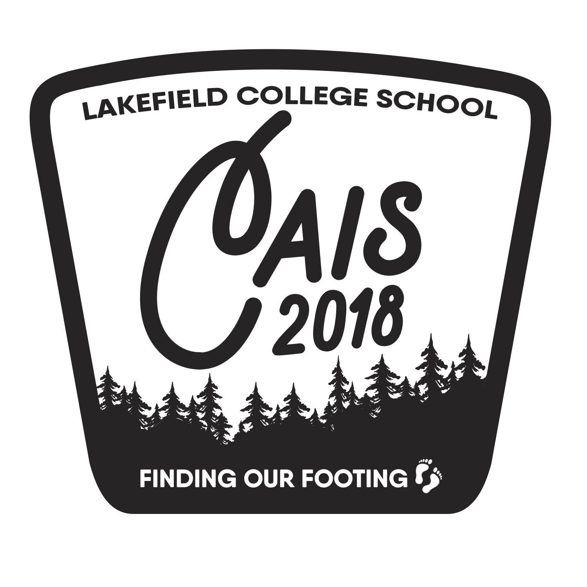
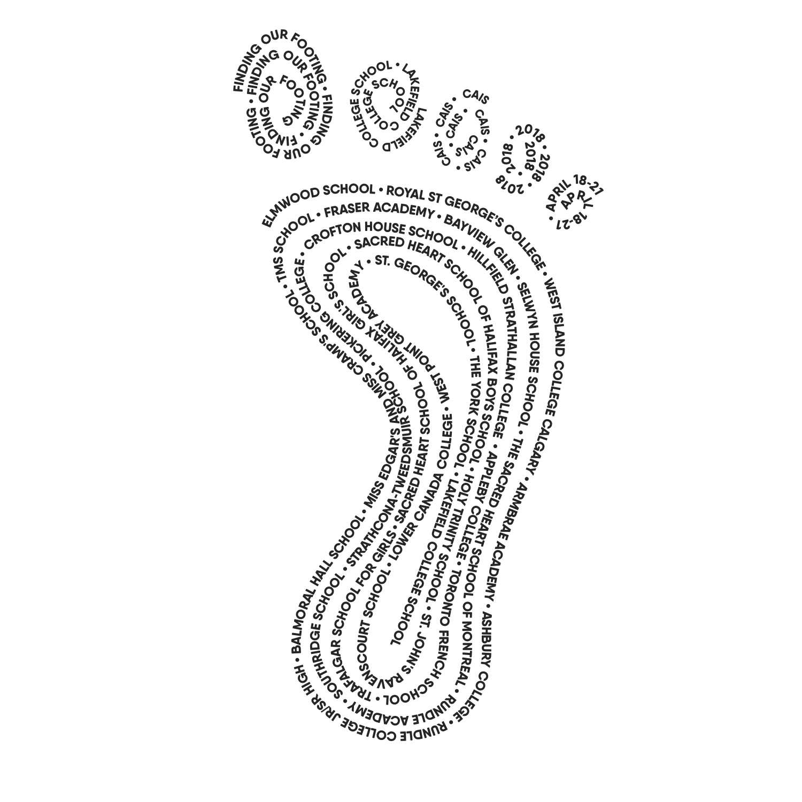

CAIS Student Leadership Conference 2018


The Get REAL Movement
Educators
The get REAL movement was founded at Western University in 2011, get REAL strives to utilize the power of personal stories to provide youth and adults with a powerful and resonating education on the impact of language surrounding LGBTQ+ discrimination and understanding that everyone has a voice to be heard and a story to tell. Get REAL is driven by the values of kindness, positivity, honesty and expectance, and aims to portray and instill those in all endeavors.